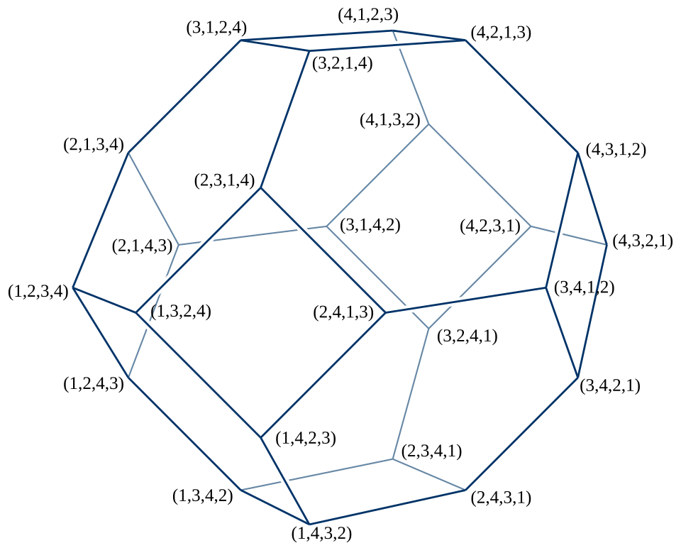

The elementary distinction between permutations and combinations is a distinction between ordered and unordered selections: P(n, k) = n!/(n − k)! counts arrangements of k objects chosen from n, and C(n, k) = n!/(k!(n − k)!) counts the underlying sets. That distinction, once made precise, turns out to be the doorway to a large part of modern algebra and combinatorics. A permutation is not merely an arrangement; it is a bijection of a finite set onto itself, and the collection of all such bijections forms the symmetric group, the first and most fundamental example of a non-abelian group. A combination is not merely an unordered list; it is an orbit of ordered lists under the action of a symmetric group, and the division by k! that the elementary course presents as "removing the orderings" is an instance of the orbit–stabiliser theorem.
This course develops both sides of the subject at the level of a graduate course in algebraic and enumerative combinatorics. On the permutation side we study the structure of Sₙ: the cycle decomposition and its uniqueness, the sign homomorphism and a complete proof that it is well defined, conjugacy classes and their sizes, and the statistics of cycles, fixed points and inversions, with their generating functions (Stirling numbers of the first kind, derangement numbers, the Mahonian distribution). On the combination side we study subsets and multisets, binomial and multinomial coefficients, combinations with repetition and the twelvefold way. We then turn to algorithmic questions — how to list, rank and unrank permutations and combinations, and how to list them so that consecutive objects differ minimally (Gray codes) — and close with group actions, Cayley's theorem, Burnside's lemma, and the probabilistic theory of random permutations, where the expected number of cycles grows like ln n.
Throughout, [n] denotes the set {1, 2, …, n}, |X| the cardinality of a finite set X, and (x)ₖ = x(x − 1)⋯(x − k + 1) the falling factorial, with (x)₀ = 1. We write x⁽ᵏ⁾ = x(x + 1)⋯(x + k − 1) for the rising factorial. Permutations are composed as functions, right to left: (στ)(i) = σ(τ(i)). Every computation in this course follows that convention, and the reader should be aware that some texts (notably in computational group theory) compose left to right, which reverses the order of every product.
In this course, you will:
- 1.Treat permutations as bijections and k-permutations as injections, and organise counting by the symmetric group Sₙ
- 2.Prove the cycle decomposition theorem and compute orders, powers and inverses from cycle type
- 3.Prove that the sign of a permutation is well defined in three independent ways, and meet the alternating group
- 4.Classify conjugacy classes of Sₙ by partitions and compute their sizes n!/zλ
- 5.Count permutations by their number of cycles (Stirling numbers of the first kind) and by fixed points (derangements)
- 6.Develop binomial and multinomial coefficients, multisets and combinations with repetition, and the twelvefold way
- 7.Study inversions and the q-analogues of n! and C(n, k), including their interpretation over finite fields
- 8.Rank and unrank permutations and combinations, and construct Gray codes for subsets, permutations and combinations
- 9.Prove Cayley's theorem and the orbit–stabiliser theorem, and use Burnside's lemma to count up to symmetry
- 10.Analyse random permutations: cycle counts, the harmonic numbers, Poisson limits and the longest cycle
Figures


Contents
Permutations as Bijections and the Symmetric Group Lesson 2
The Cycle Decomposition Lesson 3
Transpositions and the Sign of a Permutation Lesson 4
Conjugacy Classes of the Symmetric Group Lesson 5
Counting Permutations by Cycles — Stirling Numbers of the First Kind Lesson 6
Fixed Points, Derangements and Restricted Cycle Structure Lesson 7
Subsets, Binomial Coefficients and Multinomial Coefficients Lesson 8
Multisets, Combinations with Repetition and the Twelvefold Way Lesson 9
Inversions and q-Analogues of Permutations and Combinations Lesson 10
Ranking and Unranking Permutations and Combinations Lesson 11
Gray Codes for Subsets, Permutations and Combinations Lesson 12
Group Actions, Cayley's Theorem and Counting up to Symmetry Lesson 13
Random Permutations Problem Set
60 problems Assessment
Randomly generated questions
Image sources
- Figure 1 · Montmort - Essay d'analyse sur les jeux de hazard, 1713 - 276. By Pierre Rémond de Montmort. Public domain. From Wikimedia Commons: https://commons.wikimedia.org/wiki/File:Montmort_-_Essay_d'analyse_sur_les_jeux_de_hazard,_1713_-_276.tif
- Figure 2 · Permutohedron. By David Eppstein. Public domain. From Wikimedia Commons: https://commons.wikimedia.org/wiki/File:Permutohedron.svg